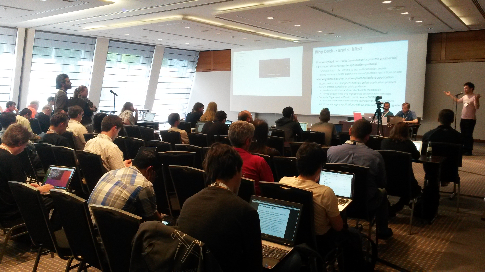

WCAG
Web Content Accessibility Guidelines
Author: Jonas Jared Jacek · License: CC BY-NC-ND 4.0Themen
- Präambel
Geschichte des World Wide Web und die Mission des W3C. - ...
... - Accessibility Standards?
Informationen und Tipps zu den Web Content Accessibility Guidelines (WCAG). - Diskussion
Beantwortung von Fragen. Diskussion zur Nutzung von Standards.
Präambel
Geschichte des World Wide Web und die Mission des W3C.
Geschichte
- 1989 entwickelt Tim Berners-Lee das Mesh
- am CERN, in Genf, Schweiz.
- 1990 wird das Mesh umbenannt in World Wide Web.
Das Mesh
 Vorschlag für ein "Informationsmanagementsystem" das "vage, aber spannend" ist.
Vorschlag für ein "Informationsmanagementsystem" das "vage, aber spannend" ist.
Sir Tim Berners-Lee

Tim Berners-Lee hat die erste Webseite, den ersten Browser und den ersten Webserver entwickelt.
Er schrieb die ersten Spezifikationen für URLs, HTTP und HTML.
World Wide Web Consortium (W3C)
1994 gründete Tim Berners-Lee das Normungsgremium W3C.
Das W3C entwickelt Protokolle und Richtlinien, die das langfristige Wachstum des des World Wide Web sicherstellen.
Mission des W3C
Die Mission des W3C ist es, das World Wide Web durch die Entwicklung von Protokollen und Richtlinien, die das langfristige Wachstum des Internets sicherstellen, voll auszuschöpfen.
Mission des W3C
Eines der definierten Ziele der Mission ist es, die Vorteile des World Wide Web (z.B. Kommunikation, Handel, Wissensaustausch, etc.) allen Menschen zugänglich zu machen:
Ein Web für alle Menschen
... unabhängig von ihrer Hardware, Software, Netzwerkinfrastruktur, Sprache, Kultur, geographischer Lage oder körperlicher oder geistiger Fähigkeit.
Hardware, Software und Netzwerke
Die Inklusionsarbeit bzgl. Hardware, Software und Netzwerkinfrastruktur drückt sich durch die Zusammenarbeit mit und Kompatibilität zu Standards anderer Normungsgremien, z.B. der IETF (TCP/IP, HTTP, DNS, etc.) aus.
World Wide Web im Internet
IETF beschreibt die Technologien des Internet.
W3C beschreibt die Technologien des World Wide Web.
Internet
(IETF)
World Wide Web
(WWW)
Sprache, Kultur und Geografische Lage
Die Inklusionsarbeit bzgl. Sprache, Kultur und geografischer Lage, findet innerhalb der W3C Internationalization (i18n) Activity statt. Diese entwickelt u.a. Richtlinien für Geo-Lokalisierung, Tutorials für HTML Editoren von mehrsprachigen Webseiten, etc.
Körperliche und geistige Fähigkeiten
Die Inklusionsarbeit bzgl. körperlicher und/oder geistiger Fähigkeiten, findet innerhalb der W3C Web Accessibility Initiative (WAI) statt. Diese entwickelt u.a. die Web Content Accessibility Guidelines (WCAG).
W3C-Ökosystem
Working Groups & Task Forces entwickeln Richtlinien.
W3C
HTML
Working Group (WG)
HTML5
...
WAI
Task Force
WCAG WG
WCAG
2.0
Web Accessibility Initiative (WAI)
...
...
Internet Engineering Task Force (IETF)
| Webseite | https://ietf.org/ |
|---|---|
| Standards | TCP, IP, HTTP, DNS, etc. |
| Mitglieder | 80.000+ Personen |
Mitglieder (Beispiel)
- Jari Arkko, Ericsson
- Ben Campbell, Oracle
- Benoit Claise, Cisco
- Deborah Brungard, AT&T
- Stephen Farrell, Trinity College Dublin
- Kathleen Moriarty, Dell EMC
- Mirja Kühlewind, ETH Zurich
- …
IETF - Working Group
Mitglieder (Beispiel)
- Arron Eicholz, Microsoft
- Alex Danilo, Google
- Edward O'Connor, Apple Inc.
- Jonathan Watt, Mozilla Corporation
- Erik Dahlström, Opera Software
- Anthony Grasso, Canon Inc.
- Steve Faulkner, The Paciello Group
- …
W3C - Multilingual Web Workshop

International Organization for Standardization (ISO)
| Webseite | https://www.iso.org/ |
|---|---|
| Standards | WCAG, MathML, ISO 639, ISO 3166, etc. |
| Mitglieder | 162 Länder |
Gemeinsamkeiten
- Gesellschaftlich breit aufgestellt
Regierungsvertreter, Akademiker (R&D), Privatunternehmen, Organisationen, … - Offene Prozesse
(Größtenteils) transparente Prozesse, Beteiligung/Feedback ist möglich und gefordert. - Freie Nutzung
Standards sind frei zugänglich, kostenfreie Nutzung, weite Verbreitung ist angestrebt.
Accessibility Standards?
Die Web Content Accessibility Guidelines (WCAG).
Grundwortschatz
Standards entsprechen den Sprachen des Internet und des World Wide Web. Sie harmonisieren das Senden und Empfangen von Informationen.
Mitsprache
Wenn Sie mitsprechen wollen, müssen Sie Standards beherrschen.
Verständigung
Erst die gemeinsam gesprochenen Sprachen ermöglichen Kommunikation zwischen den verschiedenen Akteuren.
Akteure sind zum Beispiel …
- Benutzer
Konsumenten, Content Provider, … - Browser Software
Firefox (Gecko), Chrome (Webkit), Internet Explorer (Trident), Edge (EdgeHTML), … - Web Applications
Suchmaschinen, Online Shops, Soziale Netzwerke, … - Content Provider
Verlagswebseiten, Video-Plattformen, Informationsportale, …
Beispiel
Web Application // Content Provider
Suchmaschine crawlt Inhalte von Verlagswebseite.
- Internetstandards
IP, DNS, HTTP, … - Webstandards
HTML, WCAG, Microdata, CSS, … - Best (Current) Practices
Robots Exclusion Protocol (Robots.txt), Language Codes, …
Wirkungsbereiche
- Interoperabilität
Funktionalität, Plattformunabhängigkeit, Geräteunabhängigkeit, … - Sicherheit
Verschlüssselung (SSL), Privatsphäre (DNT), … - User-Experience
Informationsfluss, Geschwindigkeit, Interface Design, … - Marketing
Search Engine Optimization (SEO), Search Engine Advertising (SEA), …
Wichtig
Standards zu beherrschen ist eine Vorraussetzung für den Erfolg eines jeden Akteurs.
Worauf sollten Sie achten?
Empfehlung 1
Sie sollten die Standards kennen, die für Ihr Produkt/Ihren Markt wichtig sind.
Empfehlung 2
Sie sollten sich regelmäßig über Standards, die für Ihr Produkt/Ihren Markt wichtig sind, informieren.
Dem Markt vorraus sein: Gucken Sie, welche Standards neu entstehen (RFC's).Empfehlung 3
(Externe) Mitarbeiter sollten die Standards, die für Ihr Produkt/Ihren Markt wichtig sind, kennen und beherrschen.
Zu oft wird veraltetes und/oder falsches Wissen angewendet.Empfehlung 4
Fordern Sie die (fehlerfreie) Nutzung von konkreten Standards wenn Sie Leistungen kaufen (z.B. Hosting, HTML-Templates, Landingpages, …)
Überprüfbarkeit und Bewertung der Qualität: Bestellte Leistung = erbrachte Leistung?Diskussion
Fragen & Diskussion zur Nutzung von Standards.
Kontakt
Weitere Informationen und Kontaktdaten unter: